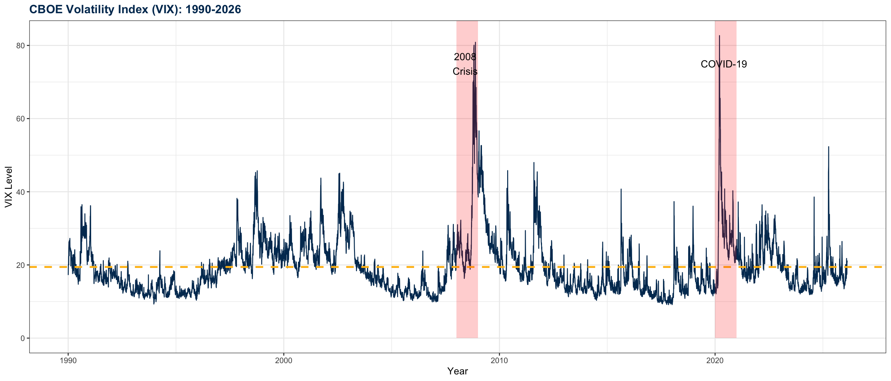
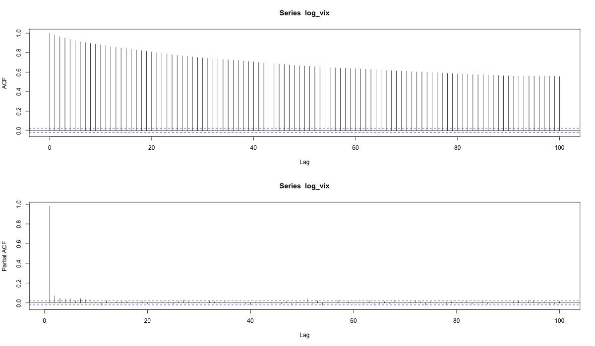
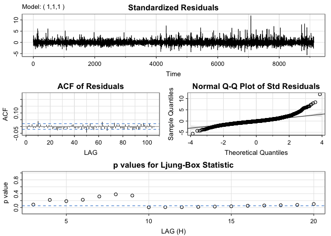
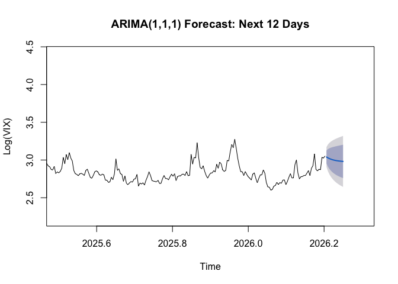
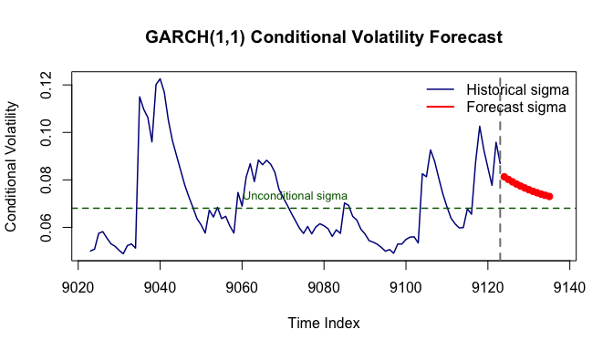

| Statistic | Value |
|---|---|
| Mean | 19.44 |
| Median | 17.58 |
| Std. Dev. | 7.77 |
| Min | 9.14 |
| Max | 82.69 |
Modeling Volatility in Financial Markets
A Time Series Analysis of the CBOE Volatility Index (VIX)
Aarti Garaye
2026-03-19
Outline
Part 1: Introduction
- Motivation & Background
- VIX: The “Fear Index”
- Research Objectives
Part 2: Data & Methods
- Dataset Overview
- Box-Jenkins SARIMA
- GARCH Models
Part 3: Results
- ARIMA(1,1,1) Findings
- GARCH(1,1) Estimation
- Volatility Persistence
Part 4: Conclusion
- Key Discoveries
- Practical Applications
- Future Research
Introduction
Why Study VIX?
VIX = CBOE Volatility Index
Market’s expectation of 30-day forward volatility from S&P 500 options
- Trading: Options pricing, portfolio hedging
- Risk Management: VaR calculations, stress testing
- Market Sentiment: “Fear gauge” during crises
- Asset Allocation: Inverse correlation with stocks
Challenges
Volatility exhibits complex patterns:
- Clustering (high volatility follows high volatility)
- Mean reversion (returns to long-run average)
- Heavy tails (extreme events more common than normal distribution)
These are known as stylized facts which makes forecasting and generating synthetic financial time series a hard task.
VIX Time Series (1990-2026)

Key Features: Volatility clustering, crisis spikes, mean reversion
Research Objectives
Primary Goal: Model VIX dynamics using time series analysis methods and use those models to forecast
- Identify appropriate SARIMA model for conditional mean
- Apply Box-Jenkins methodology
- Capture time-varying volatility with GARCH
- Test for ARCH effects
- Forecast future VIX levels and volatility using both models
Key Result: Comprehensive analysis combining SARIMA + GARCH with long memory investigation
Data & Methodology
Data Overview
Source: The dataset is obtained from the FRED: Federal Reserve Bank of St. Louis.. The source is Chicago Board of Options Exchange and released by CBOE Market Statistics.
Period & Frequency: January 2, 1990 – February 16, 2026
Frequency: Daily (252 trading days/year)
Observations: 9,124 (after removing NAs)
Box-Jenkins SARIMA
It is a simple step-by-step approach in order to choose the best SARIMA model.
1. Identification
- Transform data (log stabilizes variance)
- Test stationarity (ADF test)
- Examine ACF/PACF patterns
- Determine orders (p, d, q)
2. Estimation
- Maximum likelihood estimation
- Compare candidate models (AIC/BIC)
3. Diagnostic Checking
- Residual analysis (ACF)
- Ljung-Box test (white noise?)
- Q-Q plots (normality?)
- Check for remaining patterns
4. Forecasting
- Generate h-step ahead forecasts
- Compute confidence intervals
GARCH Methodology
GARCH(1,1) Specification:
Mean equation: \[r_t = \mu + \epsilon_t, \quad \epsilon_t = \sigma_t z_t\]
Variance equation: \[\sigma_t^2 = \omega + \alpha_1 \epsilon_{t-1}^2 + \beta_1 \sigma_{t-1}^2\]
where:
- \(\omega\) = constant
- \(\alpha_1\) = ARCH effect (shocks)
- \(\beta_1\) = GARCH effect (persistence)
Key Properties:
- Stationarity: \(\alpha + \beta < 1\)
- Persistence: \(\alpha + \beta\) measures volatility persistence
- Half-life: \(\frac{\ln(0.5)}{ \ln(\alpha + \beta)}\)
Results: SARIMA
Stationarity Testing
| Series | ADF.Statistic | P.value | Conclusion |
|---|---|---|---|
| Log(VIX) | -6.10 | 0.01 | Stationary |
| Δ Log(VIX) | -23.48 | 0.01 | Stationary |
Paradox: ADF says stationary (d=0), but ACF shows extremely slow decay (suggests d=1)
Resolution: VIX exhibits long memory (fractional integration)
- True \(d \approx 0.4\) (between I(0) and I(1))
- Decision: Use \(d=1\)
- ARIMA(1,1,1) provides practical approximation
The long memory segment using \(d=0.4\) is done in my github repo
ACF/PACF Analysis

ACF shows slow decay (long memory), PACF cuts off at lag 1
Interpretation:
- ACF: Very slow decay (persists 400+ lags)
- Charaacterstic of fractional integration
- PACF: Cuts off after lag 1
- Suggests AR(1) component
Model Selection
| Model | AIC | BIC | Best |
|---|---|---|---|
| ARIMA(0,1,1) | -23240.51 | -23226.27 | |
| ARIMA(1,1,0) | -23232.92 | -23218.68 | |
| ARIMA(1,1,1) | -23364.86 | -23343.51 | ✓ |
| ARIMA(2,1,1) | -23362.12 | -23333.66 | |
| ARIMA(1,1,2) | -23361.45 | -23332.99 |
ARIMA(1,1,1) has the lowest AIC BIC
SARIMA Fit

Standardized Residuals: No obvious patterns or trends; appear to fluctuate around zero
ACF of Residuals: Most lags are within confidence bounds, suggesting white noise for residuals
Q-Q Plot: Shows some deviation in the tails
Ljung-Box Statistics: Many p-values are below 0.05, suggesting some remaining autocorrelation
GARCH Models
We must test for conditional heteroskedasticity, the ARCH test results show that GARCH(1,1) is justified
| Statistic | Value |
|---|---|
| Chi-squared | 412.10 |
| Degrees of Freedom | 12 |
| P-value | < 2.2e-16 |
| Conclusion | ARCH effects present |
Highly significant (p < 0.001) Confirms volatility clustering!
Justifies GARCH modeling
Key GARCH Findings
1. Volatility Persistence
\[\alpha_1 + \beta_1 = 0.91\]
- Very high persistence (91% carries over daily)
- Half-life = 7.4 days (shocks last 1-2 weeks)
2. ARCH vs GARCH
- \(\beta_1\) (0.776) >> \(\alpha_1\) (0.134)
- Past volatility > recent shocks
- Volatility regimes more important than individual events
3. Heavy Tails
- Student-t degree of freedom \(\nu = 4.72\)
- Extremely fat tails (kurtosis ≈ 9 vs 3 for normal)
- Normal distribution severely underestimates tail risk
4. Model Fit
- Log-Likelihood: 12,806.70
- AIC/BIC ≈ -2.80
- Substantially better than ARIMA-only
Bottom line: VIX volatility is highly persistent, regime-driven, and heavy-tailed
Results
ARIMA(1,1,1) Forecasting

Key Observations:
- Mean reversion to long-run average (log(VIX) ≈ 3.0)
- Expanding confidence intervals (increasing uncertainty)
- Cannot predict crises or regime changes
- Useful for short-term (1-2 weeks) under normal conditions
GARCH Forecast

Key Observations:
- Gradual mean reversion to unconditional volatility
- Half-life effect visible (7.4 days)
- Cannot predict regime changes or crises
- Useful for VaR calculations and options pricing
Conclusion
Key Discoveries
1. Long Memory
- VIX exhibits fractional integration (d ≈ 0.4)
- Explains extremely slow ACF decay
2. ARIMA(1,1,1)
- Best balance of fit and parsimony
- Captures mean dynamics effectively
- Near-cancellation (AR ≈ -MA) confirms long memory
3. GARCH(1,1)
- High persistence (\(\alpha + \beta = 0.91\))
- Half-life = 7.4 days
4. Model Complementarity
- ARIMA: mean dynamics
- GARCH: volatility clustering
Thank You!
Aarti Garaye
aartigaraye@ucsb.edu
PSTAT 174 - Time Series Analysis
Professor Tomoyuki Ichiba
Code & Analysis: Available on GitHub
Data Source: FRED (Federal Reserve Bank of St. Louis)